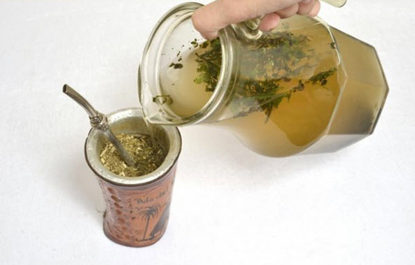
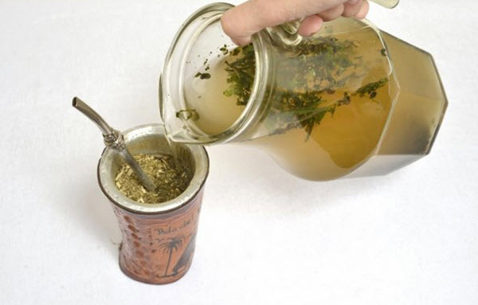
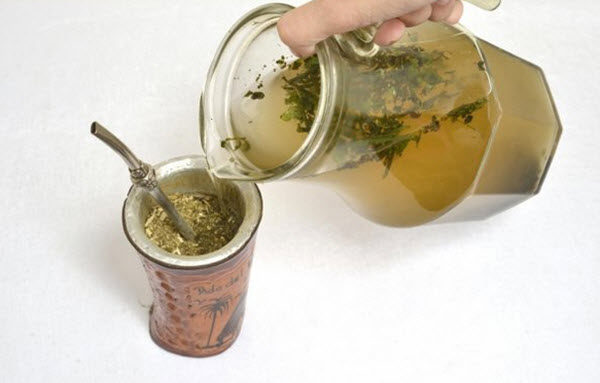

Welcome
Visitor!
Visitor!
I'm Marcelo.
Welcome to my Bio Page. Not much in yet, so it's a "work in progress" page. Enjoy it!
Welcome to my Bio Page. Not much in yet, so it's a "work in progress" page. Enjoy it!
Things that I enjoy:
<
>
 

